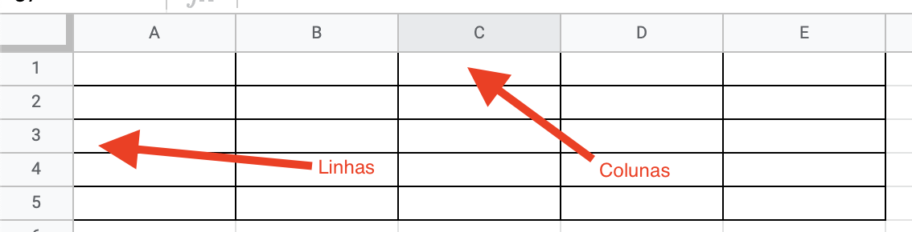

Questionário⚓︎
Perguntas Teste 1:⚓︎
Observe o código abaixo:
# Imprime um número
# print(123)
"""
Estou adorando Python
"""
print('Agora sou dev.')
#
O que # (cerquilha) faz?
- ( ) Adiciona um item na lista.
- ( ) Imprime um valor na tela.
- ( ) Nada.
- (x) Faz o interpretador do Python ignorar o que vier após (comenta).
- ( ) Faz o interpretador do Python exibir o que vier após (imprimir).
Pergunta 2: Observe o código abaixo:
O que você acha que será exibido na tela?
Dica: na dúvida, copie e cole o código no seu editor.
- (x) Agora sou dev.
- ( ) Imprimir um número.
- ( ) Estou adorando Python.
Pergunta 3: Observe o trecho de código:
Escolha a opção correta!
- (x) Isso não é um comentário.
- ( ) Isso é um comentário.
- ( ) Isso não exite em Python.
- ( ) Nenhuma alternativa está correta.
Perguntas Teste 2:⚓︎
Pergunta 1: Considerando o código abaixo:
O que seria exibido na tela?
- ( ) Python.
- ( ) Ei!
- (x) Um erro.
Pergunta 2: Qual código exibiria o texto a seguir:
- Explícito-é-melhor-que-implícito.
- Simples-é-melhor-que-complexo.
Na dúvida, copie e cole o código no seu editor.
- (x)
print('Explícito' , 'é', 'melhor-que-implícito.', sep='-')
print('Simples', 'é', 'melhor-que-complexo' sep='-' )
- ( )
print('Explícito' , 'é', 'melhor-que-implícito.', end='-')
print('Simples', 'é', 'melhor-que-complexo' end='-' )
- ( )
Pergunta 3: Todas as linguagens de programação têm características relacionadas com seus tipos de dados. Dentre essas características temos: tipagem estática, tipagem dinâmica, tipagem forte e tipagem fraca.
O Python se enquadra em duas dessas características. Quais são elas?
- ( ) Tipagem estática e dinâmica.
- ( ) Tipagem dinâmica e fraca.
- (x) Tipagem dinâmica e forte.
- ( ) Tipagem forte e fraca.
Pergunta 4: O que significa tipagem dinâmica?
- (x) Que o tipo pode ser atribuído dinamicamente pelo Python.
- ( ) Que eu devo informar o tipo ao Python.
- ( ) que o Python não usa tipos.
- ( ) Nenhum alternativa.
Pergunta 5: Strings são textos dentro de aspas. Podemos usar aspas simples ou duplas.
O que será exibido na tela se eu usar a string a seguir:
- (x) Explícito é melhor " do que implícito.
- ( ) Um erro.
- ( ) Nada.
Perguntas Teste 3:⚓︎
Pergunta 1: Qual o tipo de dado dos argumentos dentro da função print a seguir:
- ( ) bool, int, float.
- ( ) float, int, bool.
- (x) int, float, bool.
- ( ) Nenhum alternativa está correta.
Pergunta 2: Qual caractere é usado para separar as casas decimais em números de ponto flutuante?
- ( ) A vírgula.
- ( ) Espaço.
- ( ) Dois pontos.
- (x) Ponto.
- ( ) Ponto e vírgula.
Pergunta 3: Considere a frase:
Se eu adicionar um sinal de menos (-) à esquerda de um número sem sinal, em Python esse número (que era positivo) se tornaria negativo! Ex.: 10 e -10.
- (x) Essa frase está correta.
- ( ) A frase está incorreta.
- ( ) Python não suporta números negativos.
- ( ) Apenas o tipo float pode ser negativo.
Pergunta 4: Qual o valor usado para o tipo de dados boolean verdadeiro em Python?
- ( ) 1.
- ( ) true.
- ( ) False.
- (x) True.
Pergunta 5: O tipo de dado bool representa apenas dois valores na programação: Sim e Não (Verdadeiro e Falso).
Expressões com dois sinais de igual (==), conferem se um valor é igual a outro valor e se eles são do mesmo tipo.
O que o código abaixo retornaria?
- (x) True.
- ( ) False.
- ( ) 0.
- ( ) 20.
- ( ) Nenhuma das alternativas.
Perguntas Teste 4:⚓︎
Pergunta 1: Qual caractere é utilizado para criar comentários no seu código?
- ( ) //
- (x) #
- ( ) """e"""
- ( ) '''e'''
- ( ) Nenhuma acima
Pergunta 2: O que o código abaixo faz?
print('"Já sei!"')
- (x) Mostra: "Já sei!" na tela.
- ( ) Mostra: 'Já sei!' na tela.
- ( ) Mostra: Já sei! na tela.
- ( ) Não faz nada.
Pergunta 3: Quais os tipos de dados do trecho de código a seguir (na ordem):
- ( ) str, bool, float, int.
- (x) str, int, bool, float.
- ( ) str, float, bool, int.
- ( ) int, bool, str, float.
- ( ) Nenhuma opção.
Pergunta 4: O que o código abaixo exibe?
- ( ) Luiz tem 23 anos.
- (x) 23 tem Luiz anos.
- ( ) Formato.format(nome,idade).
- ( ) Nenhuma opção.
Pergunta 5: O que o código abaixo exibe?
- (x) Luiz tem 23 anos.
- ( ) 23 tem Luiz anos.
- ( ) um erro.
- ( ) Nenhuma opção.
Pergunta 6: Qual o valor da variável "formato" no código abaixo?
- ( ) Luiz tem 23 anos.
- (x) Luiz tem 23.00 anos.
- ( ) Luiz tem 23.0 anos.
- ( ) 23 tem Luiz anos.
Pergunta 7: Qual o resultado da expressão abaixo (o valor de resultado):
- ( ) 100.
- ( ) 30.
- (x) 200.
- ( ) 2000.
Pergunta 8: Escolha a frase INCORRETA
- ( ) + fas adição para int e float; também faz concatenação de duas strs.
- ( ) * faz a multiplicação entre int e float; também faz a replicação quando usando um int e str.
- (x) + faz adição para int e float; também faz concatenação entre int e str.
- ( ) / faz a divisão e sempre retorna um número de ponto flutuante.
Pergunta 9: Como saber se um número é par ou ímpar?
- ( ) Não tem como.
- (x) Da pra saber se um número é divisível por 2 usando resto da divisão (%).
- ( ) Da pra saber se um número é divisível por 2 usando a função format.
- ( ) Da pra saber se um número é divisível por 2 usando o f - strings.
- ( ) Da pra saber se um número é divisível por 2 usando as chaves { e }.
Pergunta 10: Os operadores % (sinal de porcentagem) e ** (dois asteriscos) fazem:
- ( ) Porcentagem e potenciação.
- (x) Resto da divisão e potenciação.
- ( ) Resto da divisão e multiplicação.
- ( ) Porcentagem e multiplicação.
Pergunta 11: É correto afirmar que Python é uma linguagem de tipagem dinâmica e forte?
- (x) Sim
- ( ) Não
- ( ) Depende
Perguntas Teste 5:⚓︎
Pergunta 1: Considerando o código a seguir:
O que será exibido na saída (tela)?
- ( ) 1.
- ( ) True.
- (x) Nada.
- ( ) True and 1.
Pergunta 2: Considerando o código a seguir:
O que será exibido na tela?
- (x) False.
- ( ) 1.
- ( ) True.
Perguntas Teste 6:⚓︎
Pergunta 1: Qual o resultado do código abaixo?
- (x) 1 1
- ( ) 0 1
- ( ) 1 0
- ( ) 0 0
Pergunta 2: Qual o resultado do código abaixo?
nome = 'Maria Carmo'
if ' ' in nome:
print(f'O nome {nome} tem espaços.')
else:
print(f'O nome {nome} NÃO tem espaços.')
( ) O nome Maria Carmo NÂO tem espaços. (x) O nome Maria Carno tem espaços.
Pergunta 3: É possível adicionar um if dentro de outro fazendo várias condições aninhadas. Com isso em mente, o que você acha que o código abaixo exibe na tela?
numero = 10
if numero > 1:
if numero > 2:
if numero > 3:
print('Número maior que 3')
else:
print('Número menor que 3')
else:
print('Número menor que 2')
else:
print('Número menor que 1')
Na dúvida, copie ou escreva o código em seu editor.
- ( ) Número menor que 2.
- ( ) Número menor que 3.
- (x) Número maior que 3.
- ( ) Número menor que 1.
Perguntas Teste 7:⚓︎
Pergunta 1: Qual o nome dado a um laço de repetição que roda eternamente na programação?
Ex.:
- ( ) Laço de repetição.
- ( ) Cowboy's Iasso.
- (x) Loop infinito.
- ( ) Loop finito.
- ( ) Laço sem fim.
Pergunta 2: O que o código abaixo exibiria na tela?
- (x) 0 1 2 3 4 5 6 7 8 9.
- ( ) 0 1 2 3 4 5 6 7 8 9 10.
- ( ) Um erro.
Pergunta 3: O que o código abaixo exibiria na tela?
- ( ) 0 1 2 3 4 5 6 7 8 9.
- ( ) Um erro.
- (x) 0 1 2 3 4 5 6 7 8 9 10.
Pergunta 4: É comum usar laços de repetição aninhados (while dentro de while) para repetir alguma coisa dentro de uma repetição existente.
Para tabelas, temos linhas e colunas; para cada linha, posso ter n colunas. Por exemplo: para uma tabela de 5 linhas e 5 colunas, isso significa que eu tenho 5 repetições de coluna dentro de cada repetição de linha.

Sabendo disso: o que o código a seguir apresentaria na tela?
linhas = 2
colunas = 2
linha = 1
while linha <= linhas:
coluna = 1
while coluna <= colunas:
print(linha, coluna)
coluna += 1
linha += 1
- (x) 1 1 1 2 2 1 2 2
- ( ) 1 1 2 2
- ( ) 1 1 1 1
Perguntas Teste 8:⚓︎
Pergunta 1: Qual o trecho inicial usado para criar a função "falar"?
- (x) def falar.
- ( ) function falar.
- ( ) fala().
- ( ) falar = def
- ( ) Nenhuma das opções.
Pergunta 2: Por qual motivo devo criar funções?
- ( ) Para criar objetos em vários locais.
- (x) Para ter a possibilidade de replicar trechos em vários locais diferentes.
- ( ) Para criar a função Print em vários locais diferentes.
Pergunta 3: Em qual momento uma função será executada?
- ( ) Ao digitar o nome da função + colchetes.
- (x) Ao digitar o nome da função + parênteses.
- ( ) Ao digitar o nome da função + sem parênteses.
Pergunta 4: Funções podem usar parâmetros para receber valores. Parâmetro é o nome da "variável" dentro dos parênteses, argumento é o valor passado para o parâmetro no momento da execução da função.
Sabendo disso, o código a seguir exibe o que na tela?
def multiplo_de(numero, multiplo):
resultado = numero % multiplo == 0
print(f'{numero} é múltiplo de {multiplo}?', end=' ')
print(resultado)
multiplo_de(16, 8)
multiplo_de(15, 3)
multiplo_de(10, 2)
-
( ) -> 16 é múltiplo de 8? False -> 15 é múltiplo de 3? False -> 10 é múltiplo de 2? False
-
( ) -> 8 é múltiplo de 16? True -> 3 é múltiplo de 15? True -> 2 é múltiplo de 10? True
-
(x) -> 16 é múltiplo de 8? True -> 15 é múltiplo de 3? True -> 10 é múltiplo de 2? True
Perguntas Teste 9:⚓︎
Pergunta 1: Quando falamos em argumentos, estamos falando sobre os valores passados para as funções no ato da sua execução. Existem argumentos nomeados e argumentos posicionais.
Argumentos nomeados recebem o nome do parâmetro antes do valor, argumentos posicionais recebem apenas o valor para preencher o parâmetro na ordem.
Por qual motivo você usaria argumentos nomeados?
- ( ) É interessante usar argumentos nomeados para manter a ordem no envio de valores para a função.
- (x) É interessante usar argumentos nomeados poder alterar a ordem no envio para a função.
- ( ) É má prática de programação usar argumentos nomeados.
- ( ) Nenhuma opção.
Pergunta 2: A regra é clara:
- (x) Você não pode enviar argumentos posicionais após argumentos nomeados.
- ( ) Você não pode enviar argumentos nomeados após argumentos posicionais.
Perguntas Teste 10:⚓︎
Pergunta 1: É possível enviar valores padrão para parâmetros de função. Em qual momento esse valor é definido?
- (x) Na definição da função:
- ( ) Na execução da função:
Perguntas Teste 11:⚓︎
Pergunta 1: Escopo é algo muito usado na computação para delimitar e proteger determinadas partes do código. Em Python, o único escopo que vimos até então foi o escopo de funções (existem outros).
Ao definir variáveis e outros nomes dentro de escopo de funções em Python, é correto afirmar que:
- (x) Esses nomes não estarão disponíveis fora do escopo da função (no escopo externo), mas estarão disponíveis em escopos mais internos (outras funções internas)
- ( ) Esses nomes não estarão disponíveis fora do escopo da função (no escopo externo), mas não estarão disponíveis em escopos mais internos (outras funções internas)
- ( ) Esses nomes não estarão disponíveis fora do escopo da função (no escopo externo), também não estarão disponíveis em escopos mais internos (outras funções internas).
Pergunta 2: É possível alterar variáveis de escopo externo em escopo interno?
- (x) Sim, com a palavra global.
- ( ) Não.
Pergunta 3: Em situações normais (sem uso da palavra global), definir duas variáveis de mesmo nome em escopo externo e interno:
- ( ) Gera erros.
- ( ) Define a mesma variáveis em todos locais do código.
- ( ) Não é possível fazer isso.
- (x) Define duas variáveis de mesmo nome em escopos separados. Uma não afetaria a outra.